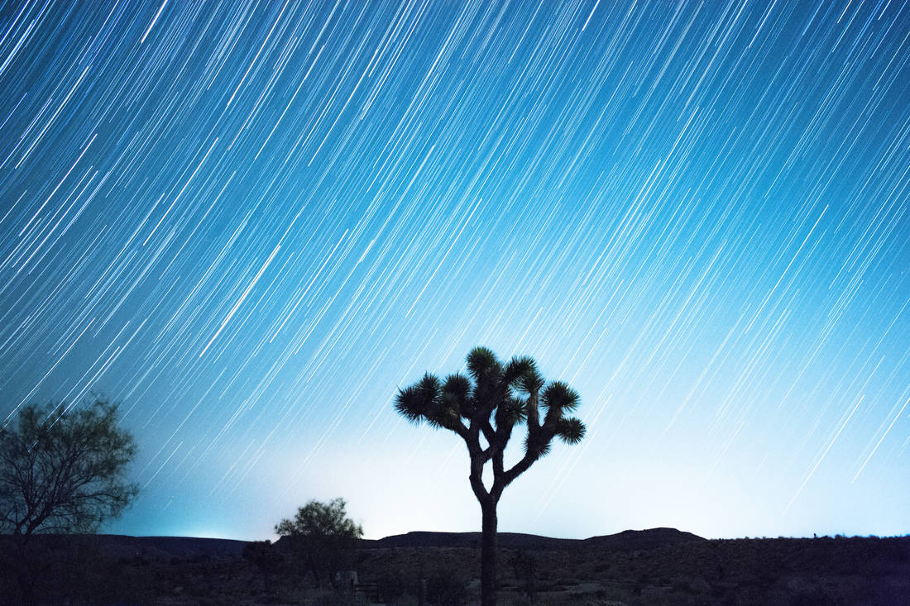

How to create star trails in seven steps: what to bring, the camera settings to start with, how to point the camera, and how to turn a night of photos into one finished image.

A star trail image shows the stars as long, curved streaks across the sky. Earth turns, the stars appear to move, and a camera that keeps taking pictures records the whole path. You do not shoot one long exposure. You shoot hundreds of short ones and blend them together afterward on your computer. That is easier on the camera and gives you much cleaner results. Star Trail CleanR, the free app on this site, does the blending for you.
Dark skies make the best star trails. City lights wash out the fainter stars, and a bright moon does the same. Pick a night near the new moon, and drive away from town if you can.
If you are new to this, join a local astronomy club at one of their star parties. There is safety in numbers, and plenty of people there will gladly teach you what you are looking at.
Put the camera in manual mode and begin here. You can adjust from these once you see your first test shot.
| Setting | Start with |
|---|---|
| ISO | 800. This keeps the star colors and holds the noise down. |
| Aperture | f/4. One nice thing about star trails is that you don't need the fastest lens. |
| Shutter speed | 20 seconds is a good starting point. Adjust up or down based on the Rule of 500 (see below). |
| Gap between shots | 1 to 2 seconds, just long enough for the camera to save each photo. |
| File type | RAW for the most editing room. JPEG also works well. |
| Focus | Switch your lens to manual focus (MF). Set it to infinity, or aim at the brightest star and focus on it with live view zoomed in. |
Divide 500 by your lens's focal length in millimeters. The answer is the longest exposure, in seconds, before the stars start to streak within a single frame.
Example: you have a 24 mm lens. 500 ÷ 24 = about 20, so set the shutter to 20 seconds. Here are the numbers for popular lenses:
| Your lens | Shutter speed |
|---|---|
| 14 mm | 35 seconds |
| 16 mm | 30 seconds |
| 20 mm | 25 seconds |
| 24 mm | 20 seconds |
| 35 mm | 14 seconds |
On a crop-sensor camera, multiply the lens by 1.5 first (1.6 for Canon). A 10 mm lens on a Canon crop camera acts like a 16 mm lens, so use 30 seconds.
The most interesting star trails have something in front of the stars: a tree, a building, a rock formation, a telescope. Use a phone app such as Sky Map to find Polaris, the North Star, and aim at it if you want the stars to sweep in circles. In the Northern Hemisphere they turn counterclockwise around it. Aim somewhere else and the trails become long, gentle arcs.
Take a test shot first. Check that the exposure looks right and the framing is what you want. Then make sure your tripod is steady and tightened down.
Set the intervalometer to keep shooting until you stop it, and start it. Then leave the camera alone.
Sooner or later a plane or satellite crosses your sky, and because the stack keeps the brightest pixels, it becomes a bright line across your finished image. For some pictures that is a fun effect. Most of the time you want it gone.
The old way is to open every frame the plane appears in and paint over the line by hand. Then you stack again, and then you hunt for the ones you missed. It works, but it is slow.
Star Trail CleanR does this step for you. Clean your frames first, then create the star trail, so the airplane lines never reach the final image.
Back home, a stacking step blends all your frames into a single picture, keeping the brightest pixels from each one. That is how the dots become trails.
You can do this right in Star Trail CleanR. When cleaning finishes, the Star Trail & Timelapse window opens. Choose your options, click Create Star Trail, and your finished image appears in the window. The same frames can also make a timelapse video.
Prefer another tool? The cleaned frames are ordinary image files, so any stacker works, such as StarStaX, a free stacker for Mac and Windows. In Photoshop, load the frames as layers and set the blend mode to Lighten.
Star Trail CleanR finds the airplane and satellite trails in your frames and repairs them using the neighboring photos, so the stars stay and the trails go. Then it creates your star trail image, and a timelapse if you want one. It is free.
Download Star Trail CleanR freeCurious how the cleaning works? Read the plain-English technical write-ups.